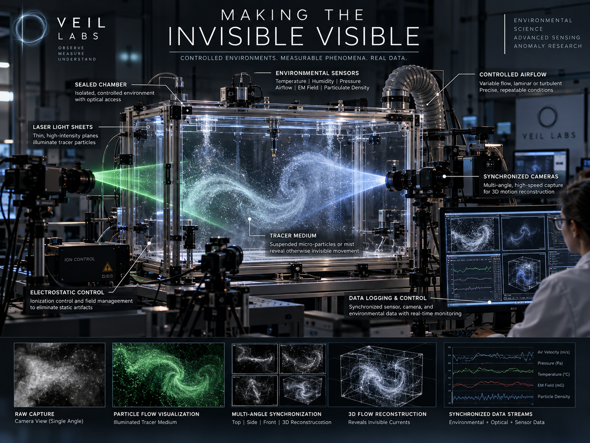

Approach
A floor, ceiling, front, rear, left and right light-grid framework with a proposed 8-inch baseline spacing, synchronized cameras and environmental sensing.
A portable experimental chamber and deployable full-room six-plane optical grid are proposed for detecting and reconstructing changes inside a monitored space.

A floor, ceiling, front, rear, left and right light-grid framework with a proposed 8-inch baseline spacing, synchronized cameras and environmental sensing.
First test known obstructions and ordinary environmental interference; record baselines, alignment stability and false-positive rates.
Share event identifiers, timestamps, cameras and environmental streams with the rest of VEIL’s systems.
These are requirements and decision criteria to develop—not completed validation or an indication that all four gates have been passed.
Laser-light and particle-scattering techniques already exist; see NIST's flow visualization work. A patent and design review is still needed.
Optical systems detect scattering, absorption, displacement or tracer motion. They cannot detect something merely because it is called invisible.
Compare measured known airflow, particles and obstructions with blind control sessions, and quantify detection limits, reconstruction error and false positives.
Suspend full-room design if small-chamber tests cannot distinguish known disturbances from lighting, turbulence, misalignment and camera artifacts.
VEIL’s planned instruments share a common emphasis: synchronized measurement, rigorous controls, raw evidence preservation and transparent review.
Contact · Collaborate · Support →